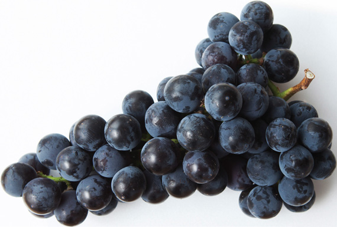

여름
여름 제철 과일
수박
포도

>새콤달콤한 맛있는 포도!
포도껍질과 씨에는 영양소가 풍부하게 들어있습니다.
손, 발, 얼굴이 붓는 것을 예방해주는 효과가 있습니다.
포도껍질과 씨에는 영양소가 풍부하게 들어있습니다.
손, 발, 얼굴이 붓는 것을 예방해주는 효과가 있습니다.
복숭아

모두가 좋아하는 달달한 복숭아!
여름 제철 과일인 복숭아는 피로회복제로도 불립니다.
비타민이 풍부해 피로 회복에 도움이 되어 근육에 쌓인 피로물을 배출시킵니다.
여름 제철 과일인 복숭아는 피로회복제로도 불립니다.
비타민이 풍부해 피로 회복에 도움이 되어 근육에 쌓인 피로물을 배출시킵니다.
여름하면 생각나는 대표적인 과일입니다.
수분 보충에 탁월하고 신경 안정에 도움을 줍니다.